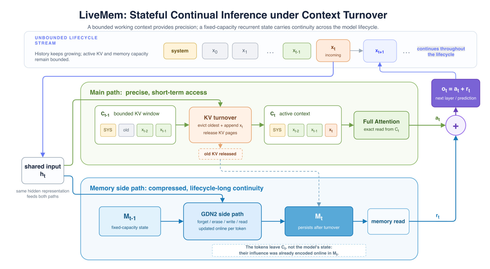
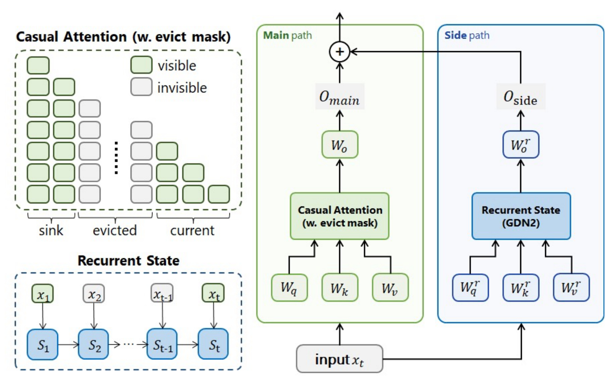
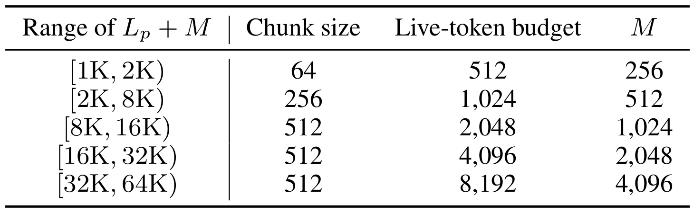
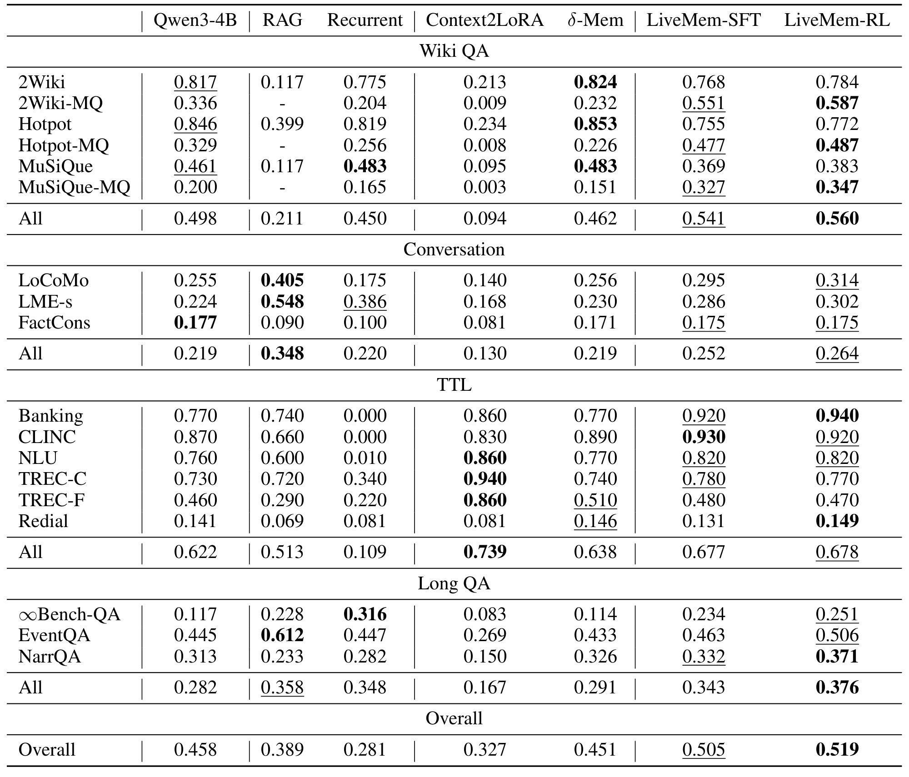
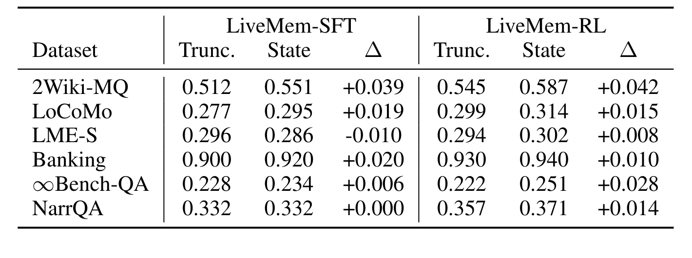
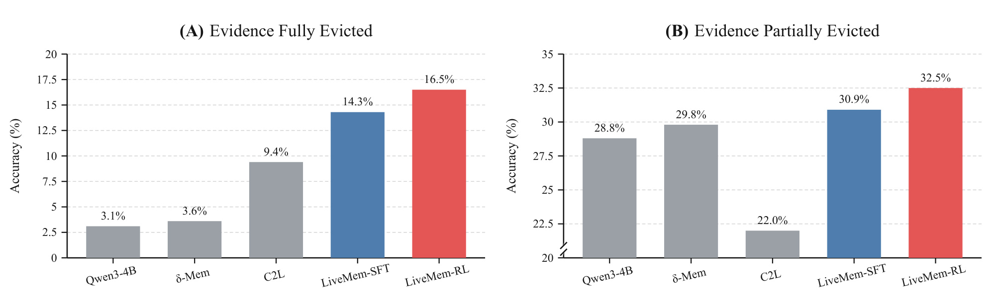
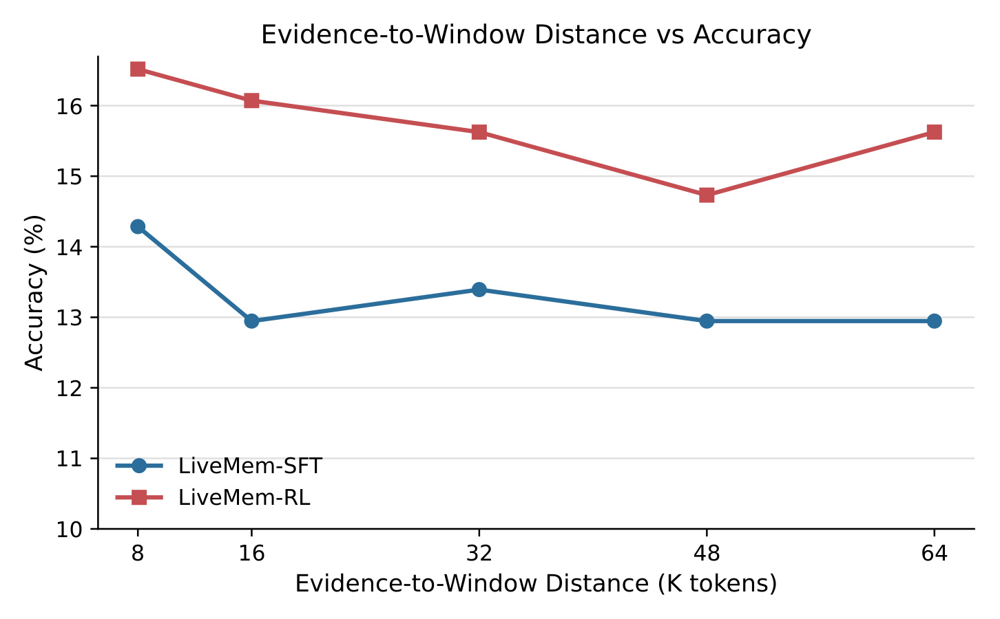
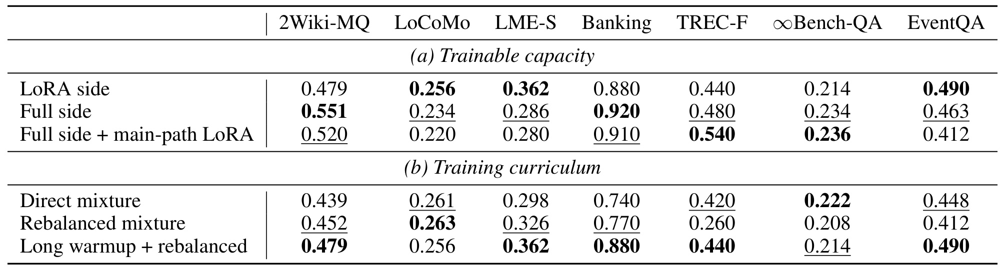
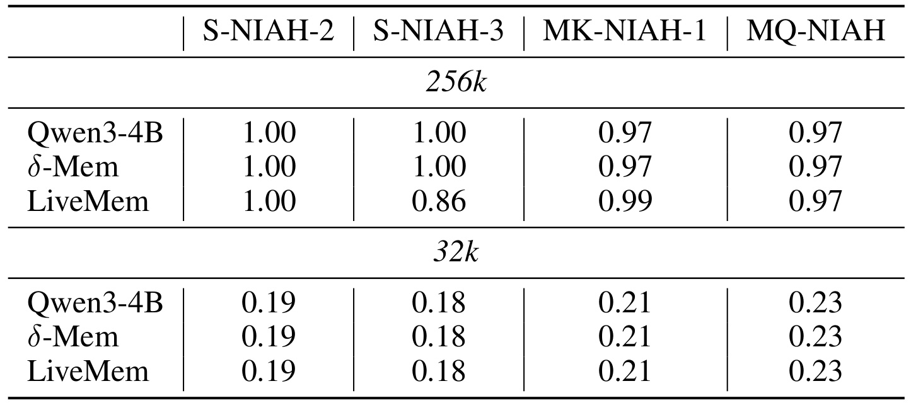

LiveMem：长时运行大模型推理中的记忆状态连续性
《LiveMem: Maintaining Memory State Continuity in Long-Running LLM Inference》由 Zhichen Liu、Ruihan Sun、Hengjie Yang、Zipeng Wu、Zhaohan Chen、Xiaofan Zhang、Yang Xu 完成，于 2026 年 8 月 3 日以 arXiv v1 公开。一作主要机构为 NatureSelect.AI 与南方科技大学，合作机构包括西安电子科技大学。论文的唯一入口是 arXiv:2608.02515。本轮能核验到论文 PDF 与 TeX 入口，但未核验到独立的官方代码仓库，因此下文对系统实现的讨论以论文公开细节为准，不把“可直接复现”当作既成事实。
长时助手不断接收交互流，历史终会超出活动上下文。检索与摘要能把选中的记录重新送回模型，却不能保证计算状态在上下文轮换后继续存在；更关键的是，如果关键历史始终留在注意力里，模型就可能完全绕开所谓的记忆分支。
1. 背景和问题
长上下文通常把“记住历史”表述为一个容量问题：只要上下文窗口足够大，或能在需要时把相关片段检索回来，模型就仍可访问过去。但持续运行的助手和 agent 面临的是另一个时间尺度。一次会话、一个长期任务或一个持续服务流没有固定终点，历史长度由生命周期而不是单次请求决定；无论活动窗口扩到 32K、256K 还是更长，总会出现旧 KV 必须释放、当前工作上下文必须换新的时刻。此时，问题不再只是“过去的文本放在哪里”，而是“模型从上一段工作上下文累积出的计算状态能否进入下一段”。
论文把传统 RAG、摘要、可编辑笔记等机制归为历史访问：它们保存显式记录，再依据当前查询选择内容，把记录重新放进当次计算。这个范式非常重要，因为显式记录可审计、可更新，也适合精确召回；但模型在构造查询时未必已经知道未来需要什么，检索失败或摘要遗漏就会造成断点。LiveMem 所说的状态连续性则是另一种能力：模型持续维护一个固定容量的潜在状态，状态寿命独立于活动上下文，随着每个 token 在线更新。它不承诺逐字重建历史，而是让过去对当前行为的影响在上下文轮换后仍然存在。因此，外部检索与内部状态不是互相替代的两个“记忆产品”，而是分别负责可寻址档案与连续计算。

Figure 1 把这一区分画成两个并行时间尺度。绿色主路是精确但短期的全注意力：系统指令作为 sink 保留，活动 KV 形成有界队列，旧块到达预算后被驱逐；蓝色侧路则把同一隐藏表示持续写入固定容量状态，旧 KV 被释放并不触发状态清空。图右侧把两路输出相加后送往下一层或预测，因此“连续”不是把历史文本悄悄留在窗口里，而是让历史已经形成的潜在影响继续参与计算。这个定义也给出了可证伪条件：如果证据离开活动窗口后，置零历史状态与保留历史状态没有差别，那么侧路即使有名为 memory 的张量，也没有成为真正承载任务的状态。
已有循环模型并不能自动满足这个条件。纯循环骨干擅长固定状态计算，却可能损失全注意力在局部细节上的精确性；给 Transformer 加一个循环分支，如果训练时关键证据始终对注意力可见，模型又可能选择更容易的主路，侧路只保留无关统计。LiveMem 因而同时提出三项约束：架构上保留短期精确注意力并加入循环状态；训练时主动让历史证据离开注意力，迫使答案依赖状态；服务时真正释放旧 KV，并让每个请求的状态槽跨块持续存在。论文的贡献不应简化成“又加了一个 memory module”，关键在于把结构、上下文轮换、后训练和服务生命周期连成同一条可检验链路。
这一问题对推荐系统也很具体。用户画像通常同时含有可检索的事件日志、短期会话兴趣与难以用少量规则概括的长期偏好。如果模型每轮只能从检索结果重建用户状态，召回器的选择偏差会直接变成个性化偏差；若用固定潜在状态承接连续交互，则有机会在不把全部历史塞回上下文的前提下，保留“已经读过什么、当前意图如何演化”的粗粒度连续性。不过，潜在状态不可解释且有损，因此它最多是日志与显式特征的补充，而不能替代可审计的用户历史、隐私删除和精确归因。
从研究设计看，“状态连续性”还把评测单位从单个静态样本改成了一个会发生资源回收的生命周期。模型必须先读历史、更新状态，再经历可验证的 KV 释放，最后回答依赖旧证据的问题；如果只在一个超长 prompt 内保留全部 token，就没有测试到论文定义的能力。这也解释了为什么窗口长度、块边界、状态是否置零、驱逐前后证据位置都必须成为实验变量，而不能只报告最终问答分数。只有把资源状态和任务状态同时纳入协议，才能排除模型仍在暗中读取旧 KV 的替代解释。
2. 方法
2.1 从重建式推理到状态连续性
论文先用三个公式划清能力边界。对固定参数的纯注意力解码器，活动上下文 (C_t) 既是可见 token 的集合，也是当下推理状态： 符号解释：(y_t) 是时刻 (t) 的输出，(\theta) 是原模型参数，(C_t) 是仍物化在活动 KV 中的工作上下文。当某段历史离开 (C_t) 后，它只能通过检索、摘要或其他显式表示重新进入模型，这就是论文所称的重建式推理。
LiveMem 额外维护 (M_t)，并把推理写成持续的状态转移： 符号解释：(X_{t+1}) 是新到达的 token 或块，(U_{phi}) 是由记忆分支参数 (phi) 控制的更新函数，(M_t) 是大小固定的潜在状态。(C_t) 保留近期信息的精确可寻址性，(M_t) 压缩生命周期历史。这里没有要求 (M_t) 逐 token 还原过去；要求是它在线更新、跨上下文切换保留，并在原始证据已不可见时仍能改变后续预测。这个行为定义比“模型里存在循环矩阵”更严格，也直接决定实验必须比较保留状态与零状态。
2.2 并行双路径与 GDN2 状态更新
LiveMem 以 Qwen3-4B 为基座，在每个 decoder layer 的注意力模块旁接一个 Gated DeltaNet-2（GDN2）侧路。两条路径读取同一层归一化隐藏表示：主路继续做全注意力，侧路按 token 读写状态，随后相加。核心设计不是用循环结构替换 Transformer，而是让注意力负责精确近期访问，让循环矩阵负责跨窗口的压缩连续性。

Figure 2 左侧给出驱逐掩码：系统 sink 始终可见，中间旧块变灰，当前块保持因果可见；下方的循环状态却从 (S_1) 连续传到 (S_t)，不会因为某块 KV 被驱逐而倒退。右侧显示主路由原有 (W_q,W_k,W_v,W_o) 产生注意力输出，侧路有自己的投影并通过 GDN2 产生读出，两者在层输出处相加。这样做保留了基座模型熟悉的短期计算路径，同时给长期信息一个独立容量。论文将侧路的 (q,k,v) 从注意力投影初始化，其他门和短卷积新初始化，最终输出投影置零；接入初始时模型等价于原基座，再让训练逐渐“打开”侧路，降低架构改造一开始扰乱输出分布的风险。
逐层计算为： 符号解释：(h_t^{ell}) 是第 (ell) 层输入，(a_t^{ell}) 是有界窗口注意力输出，(S_t^{ell}) 是该层循环状态，(r_t^{ell}) 是从状态读出的侧路输出，(o_t^{ell}) 返回原 decoder 流。侧路存在于每一层，历史影响不是只在顶层拼接一个摘要向量，而是能在深层表征演化中逐层参与。
单个循环 head 的更新把遗忘、擦除、写入和读取分开： 符号解释：(S_tinmathbb{R}^{d_k\times d_v}) 是关联矩阵；(g_tle 0) 控制沿 key 维的衰减；(b_tin[0,1]^{d_k}) 是擦除门，用于减弱与当前 key 冲突的旧关联；(w_tin[0,1]^{d_v}) 是写门；(k_t,v_t,q_t) 分别决定写入地址、写入内容和读取查询；( ho_t) 是扣除旧关联后的写入残差。外积 (k_t ho_t^\top) 把新关联写回固定大小矩阵，再用 (q_t) 读取。其合并形式是： 符号解释：第一部分对衰减后的旧状态做定向擦除，第二部分写入新值。固定容量意味着新旧信息必然竞争，门控只能学习“保留什么更有用”，不能绕过信息论上的有损压缩。Qwen3-4B 有 36 层、32 个 query head、8 个 KV head、head dimension 128；记忆侧路每层使用 32 个 (128\times128) 状态 head，并保持 FP32，再加宽度为 4 的短因果卷积状态。这个规模虽不随历史长度增长，却会按并发请求数增长，服务端显存与状态调度不是免费的。
2.3 上下文轮换与状态生命周期
输入被组织为按序到达的块 (X_0,X_1,ldots)。系统指令既是注意力 sink，也保存需要始终精确可见的最高优先级约束；其余块进入 FIFO 活动队列。新块到达时，只要块数或 token 数超过阈值，就从最旧块开始驱逐，直到满足预算。主路径的可见性可写为： 符号解释：(j) 是当前 query token 位置，(i) 是候选被注意位置；第一项保证因果性，第二项只允许仍在活动队列中的块。这个掩码只约束主注意力，GDN2 的状态更新扫描完整输入流。某块离开 (C_t) 时不再做额外“总结写回”，因为它在被处理的每个 token 上已经在线更新了状态；训练和推理都使用同一轮换语义，避免训练时偷看将来会被驱逐的 KV。
SFT 用 FlexAttention 构造动态掩码，并在 packed example 边界把循环状态归零，防止样本间泄漏。RL 更容易出现训练—推理偏差：rollout 服务若按一种块边界生成，策略重算却按另一种可见性算 log probability，优化目标就不再对应实际生成轨迹。论文因此让 rollout、重算和服务共享固定步长、32-token 页对齐及最旧优先规则。

Table 5 按模板化 prompt 长度 (L_p) 与生成额度 (M) 的总和选择规则：较短请求用 64 或 256 token 的块，8K 以上统一用 512 token 块；活动 token 预算从 512 增至 8192，生成额度从 256 增至 4096。即便最前沿块未填满，预算核算也按完整块收费，使页面释放、掩码变化和重算字段保持确定性。基准评测另用 1024-token 块与 8K/32K 活动预算，但仍执行同一个最旧优先转移。这张表的重要性不在某一组数字天然最优，而在于它把“上下文轮换”变成服务端和训练端都可复现的状态机，而非只在论文概念图里存在的操作。
服务端维护两类每请求资源：普通 KV 管理器只持有 system sink 与近期块；独立状态槽保存每个记忆增强层的 GDN2 矩阵和短卷积状态。跨越轮换边界时，中间 KV 页归还 allocator，状态槽不受影响；prefill slice 被限制在下一块边界，避免一个 scheduler batch 把未来轮换后的状态错误用于更早 token。请求结束后同时释放轮换记录和状态槽，请求之间必须归零隔离。如果状态槽复用或回收隔离出错，历史泄漏会比普通 KV 泄漏更难察觉，因为它以潜在表征而非可读文本存在。
2.4 面向记忆的 SFT 与 RL
仅有侧路仍可能被主路绕开，因此训练样本由历史材料、查询和答案组成，并通过轮换掩码让大部分历史离开注意力。SFT 把它们串成因果流，只在答案 token 集合 (A) 上计算交叉熵： 符号解释：(A) 是答案位置集合，(x_t) 是目标 token，(C_t) 与 (S_t) 分别是活动上下文和循环状态。主干冻结，记忆分支全参训练；第一阶段用长文问答让侧路先形成稳定读写行为，第二阶段加入 QA、分类和多问题任务。附录给出的配方是两阶段 64K pack，100 步长文 warmup 后再训练 500 步混合数据；16 张 A800-80GB 组成全局 16 pack，约每步一百万 token。资源量说明当前结果是重后训练方案，不是廉价 adapter 即插即用。
RL 使用 GRPO，每个 prompt 采样 (G=8) 个回答，并在组内归一化奖励： 符号解释：(R_i) 是第 (i) 个回答奖励，(mu_R,sigma_R) 是组内均值和标准差，(hat A_i) 是相对优势。只保留准确率有方差的组做动态采样，避免所有回答都对或都错时无有效排序信号。
策略目标采用非对称裁剪与 token 级平均： 符号解释：( ho_{i,t}) 是新旧策略概率比，(\bar ho) 把它裁到 (1-epsilon_{mathrm{low}}) 与 (1+epsilon_{mathrm{high}}) 之间；论文取 0.20、0.28，负优势下 (gamma=3)，且不加 KL。每个样本可含多个问题，奖励为： 符号解释：(a_i=k_i/n_i) 是逐题准确率，(k_i=n_i) 时奖励全部答对，(F_i=0) 表示格式失败并受罚。先用 exact match 判定，负例再由语言模型 judge 做等价判断。RL 的作用不是扩充状态容量，而是让模型更主动地把未来可能有用的信息写入并在回答时读取；这也意味着结果会依赖 reward 与 judge 的偏差，后续复现必须同时审计奖励实现。
3. 实验结果
3.1 任务、基线与评测协议
实验围绕三个问题：LiveMem 是否比文本记忆和其他内在记忆方法更均衡；状态能否在证据被驱逐后继续起作用；怎样训练侧路才有效。所有系统基于 Qwen3-4B-Instruct-2507。Wiki QA 包括 2WikiMultiHopQA、HotpotQA、MuSiQue 及把多个样本打包后一次回答多问的 MQ 版本；Conversation 包括 LoCoMo、LongMemEval-S 和 MemoryAgentBench 的 FactConsolidation；TTL 包含 Banking77、CLINC150、NLU、TREC 粗细粒度和 ReDial；Long QA 包括 InfinityBench-QA、EventQA、NarrativeQA。
短数据集（Wiki QA 与 LoCoMo）限制活动上下文为 8K，其余为 32K；无记忆机制的基线从头部截断超限材料。开放问答用 LLM judge，分类用 exact match，ReDial 用 Recall@5。对比对象包括直接 Qwen3-4B、向量 RAG、模拟 MemAgent 的循环文本摘要、为每份记忆训练 LoRA 的 Context2LoRA、带侧路状态但评测路径会先截断超限输入的 (delta)-Mem，以及 LiveMem-SFT/RL。这个协议覆盖面较广，但不同基线的天然任务适配性差异很大，因此“总体领先”应理解为跨任务平均的均衡性，而不是每个单项都占优。
3.2 有界上下文主结果

Table 1 的 Overall 为 LiveMem-RL 0.519、LiveMem-SFT 0.505，高于 Qwen3-4B 0.458、(delta)-Mem 0.451、RAG 0.389、Context2LoRA 0.327 与循环文本基线 0.281。提升主要来自多问题 Wiki QA 与 Long QA 的均衡表现：例如 2Wiki-MQ 上 LiveMem-RL 为 0.587，而直接基线 0.336、(delta)-Mem 0.232；Long QA 三项汇总为 0.376，也高于 RAG 的 0.358 与循环基线的 0.348。它说明当同一批历史材料需要支持多个逻辑链时，持续状态比只擅长单一多跳链更稳。
表格也明确反驳“LiveMem 处处最好”。Conversation 上 RAG 汇总 0.348，高于 LiveMem-RL 的 0.264；TTL 上 Context2LoRA 0.739，高于 LiveMem-RL 0.678。单问题 2Wiki、Hotpot、MuSiQue 中，直接基座或 (delta)-Mem 也常更高。换言之，RAG 在查询已明确且可检索时保留精确证据，参数记忆在稳定标签映射上有优势；LiveMem 的卖点是任务跨度而不是单项天花板。作者把“leading overall”落在总体平均上是有表格支撑的，但无法据此推导它会在任意真实 agent 工作负载上优于成熟检索系统。
3.3 被驱逐证据是否仍在状态中
总体分数仍可能来自架构额外容量，不能单独证明历史状态承载信息。论文因此对同一个 LiveMem checkpoint 做 State 与 Trunc. 对照：State 扫描完整历史并把它留在循环状态，Trunc. 只看相同的末尾后缀但从零状态开始。两者当前窗口相同，差值才更接近历史状态的净贡献。

Table 2 中 LiveMem-RL 的六个代表数据集都出现正增益：2Wiki-MQ +0.042、LoCoMo +0.015、LME-S +0.008、Banking +0.010、InfinityBench-QA +0.028、NarrQA +0.014。SFT 多数为正，但 LME-S 是 -0.010，NarrQA 为 0。这个结果比只看 Overall 更有说服力，因为它控制了当前后缀；同时增益幅度大多只有一到四个百分点，说明状态有用但并非压倒性。RL 后所有列转正，支持“奖励训练改善状态利用”的解释，不过还缺少多随机种子置信区间，不能判断较小差值的统计稳定性。
论文再筛出 LongMemEval 中支持证据完全或部分离开活动窗口的样本，把“历史在状态里”变成更苛刻的测试。

Figure 3 左侧的完全驱逐条件最关键：Qwen3-4B 为 3.1%，(delta)-Mem 为 3.6%，Context2LoRA 为 9.4%，LiveMem-SFT/RL 达 14.3%/16.5%。当原始证据已不在当前 KV 中，LiveMem 仍有超过十个百分点的绝对优势，说明历史状态至少携带了可供答案使用的任务相关影响。右侧部分驱逐条件下，LiveMem-SFT/RL 为 30.9%/32.5%，也高于直接基座 28.8%、(delta)-Mem 29.8% 与 Context2LoRA 22.0%。但完全驱逐时 16.5% 的绝对准确率仍很低；图证明的是“没有在驱逐边界归零”，而不是“长时记忆问题已经解决”。
为了区分一次越界与更长时间持续，作者把支持证据相对当前窗口的距离从 8K 增加到 64K。

Figure 4 中 RL 曲线大约从 16.5% 缓慢降到 48K 处的 14.7%，64K 又回到约 15.6%；SFT 从约 14.3% 降到 16K 的 12.9%，之后在 12.9%-13.4% 附近波动。趋势说明多次轮换后仍保有可测的任务影响，且 GDN2 的衰减与擦除没有让信息在第一次 KV 释放时骤然消失。另一方面，曲线采样点不多、没有误差棒，64K 回升也不应被解释成记忆反而变强；更保守的结论是状态的可用性在测试距离内大致维持，但精确的寿命分布与方差尚未被刻画。
这一距离实验还没有把“经过多少次更新”与“绝对 token 距离”彻底拆开：不同块内容会触发不同的遗忘、擦除和写入竞争，信息衰减可能由中间材料复杂度而非距离本身决定。后续应固定证据距离、改变干扰块数量与语义相似度，再反向固定更新次数、改变块长度，才能识别 GDN2 状态容量究竟受时间、写入冲突还是位置编码限制。
3.4 训练容量与课程消融

Table 3(a) 比较仅侧路 LoRA、侧路全参、侧路全参加主路 LoRA。侧路全参在 2Wiki-MQ（0.551 对 0.479）和 Banking（0.920 对 0.880）更强，也在多个任务更稳定；但 LoCoMo、LME-S、EventQA 又是侧路 LoRA 更高，主路 LoRA 在 TREC-F 和 InfinityBench-QA 最好。这不是一个所有列一致的结论，更准确的说法是注意力分布与 GDN2 行为差异较大，小子空间 LoRA 难以普遍适配，而主路可训练又可能吸收本应进入侧路的记忆，形成任务依赖的折中。
Table 3(b) 比较直接混合、删减大量长文本 QA 后的再平衡、以及先用长文本 warmup 再再平衡。直接混合时，大量长文本问答的召回要求不够强，模型可能依赖局部线索而不学状态读写；只做再平衡又使数据太少，侧路未充分激活。warmup 后再平衡在 2Wiki-MQ、LME-S、Banking、TREC-F、EventQA 上明显优于直接混合，但 LoCoMo 和 InfinityBench-QA 并非最好。它支持论文的训练叙事：先让零初始化侧路形成可用信号，再用更高记忆依赖任务塑形；同时也暴露课程对任务分布敏感，不能只看一个总分决定通用配方。
3.5 边界实验：状态不是精确档案
论文在附录主动给出 Needle-in-a-Haystack 负结果。NIAH 要求从长输入中精确找回未来相关性不可预知的稀疏字符串，它更接近无损档案检索，而非任务相关特征的压缩。

Table 6 在 256K 物化上下文下几乎都接近满分，LiveMem 只在 S-NIAH-3 为 0.86；这时 needle 仍可由注意力直接寻址，侧路没有系统收益。转到 32K 有界活动上下文后，Qwen3-4B、(delta)-Mem 与 LiveMem 在四项上完全相同，只有 0.18-0.23。也就是说，一旦任意细粒度 needle 的 KV 真正离开窗口，当前 LiveMem 状态并不能可靠恢复它。这个负结果与 Figure 3/4 不冲突：后两者说明为任务训练过的相关信息仍能影响行为，NIAH 则要求保存未来用途未知的精确 token。
因此，LiveMem 更像持续压缩的隐状态，而不是无限容量数据库。需要法律审计、用户删除、逐字引用、事实归因或罕见标识符精确召回的应用，仍必须使用外部存储和检索；状态只适合提供粗粒度先验、会话惯性或已经吸收的任务上下文。附录还指出基座 RoPE 配置上限为 262,144 token，KV 驱逐保留原始绝对位置，超过训练位置范围需要未经保证的外推。所谓“生命周期独立状态”在容量形式上可继续更新，但当前系统实验最多处理 256K 输入，不能据此宣称字面意义上的无限推理。
4. 总结
LiveMem 的主要价值是提出了一个比“能否访问旧文本”更严格的问题：当工作上下文轮换时，模型是否保留贯穿生命周期的计算状态。它用全注意力主路保留近期精确性，用每层 GDN2 侧路维护固定容量状态，再通过真正的 KV 驱逐、面向记忆的 SFT/RL 和状态感知服务让侧路成为 load-bearing。实验中 Overall 0.519 与完全驱逐证据下的明显优势支持“任务相关信息可以跨窗口继续影响预测”；State-Trunc. 对照比单纯总体领先更接近核心因果证据。
对推荐与个性化系统，我认为最可迁移的是状态层级设计：短期会话使用精确 attention/KV，长期行为日志保留可检索档案，中间增加一个在线更新的潜在用户状态，用于给召回、重排或 agent 规划提供连续先验。这个状态不应直接代替用户特征库，而应与可解释的长期兴趣、隐私删除记录和外部检索并存。训练上也不能只混入长序列；样本必须让关键证据真正离开活动窗口，并用下游任务检验状态是否仍被读取。
4.1 局限与风险
- 固定状态有损。 Table 6 已证明它不能可靠保存任意 needle，未来未知的精确信息必须交给外部档案。
- 评测外推有限。 完全驱逐准确率最高仍只有 16.5%，距离曲线无误差棒，且没有真实长期在线 agent 的跨天、跨任务测试。
- 基线与协议不完全对称。 RAG、Context2LoRA、循环文本记忆各自有强专项任务，(delta)-Mem 又按释放代码行为被截断；总体平均不能替代逐场景调优。
- 资源与服务复杂度高。 每层每请求保存 FP32 状态，SFT/RL 使用多节点 GPU、异步 rollout 和 judge；并发显存、迁移、容错与冷恢复尚未给出完整成本。
- 潜在状态安全性。 状态不可读、难审计，请求隔离错误可能泄漏历史；用户要求删除某段信息时，也缺少可验证的定向遗忘机制。
- 长度仍受基座限制。 当前 RoPE 上限和最多 256K 的实验并不支持“无限生命周期”这一字面结论，位置外推仍是未解决环节。
- 可复现性待补。 本轮未核验到独立官方代码仓库，训练数据混合、judge 行为和服务补丁需要代码公开后再确认。
4.2 后续跟进
- 优先复现 Table 2 的 State-Trunc. 对照，并增加 3-5 个随机种子与 bootstrap 置信区间；这是判断状态净贡献是否稳定的最低成本实验。
- 把 LiveMem 与同一 retriever 组合，分别测试“仅状态、仅检索、状态+检索”，尤其覆盖精确 needle 与模糊偏好两类查询，验证二者是否真正互补。
- 在推荐场景构造上下文轮换基准：让用户早期偏好离开活动窗口，再测试候选召回、重排和解释的一致性，同时检查删除请求后潜在状态是否仍残留影响。
- 跟踪代码发布，核验每层状态显存、并发吞吐、prefill/decode 延迟和请求状态迁移；没有这些指标，架构难以判断是否适合线上长期 agent。
- 研究可审计的状态重置、分段快照、加密与选择性遗忘机制，并测试服务崩溃恢复后状态是否连续且不跨用户串扰。
- 关注 NoPE 或其他长度泛化骨干与 LiveMem 的结合，区分“循环状态容量不随历史增长”与“整个模型能在任意绝对位置稳定运行”这两个不同命题。